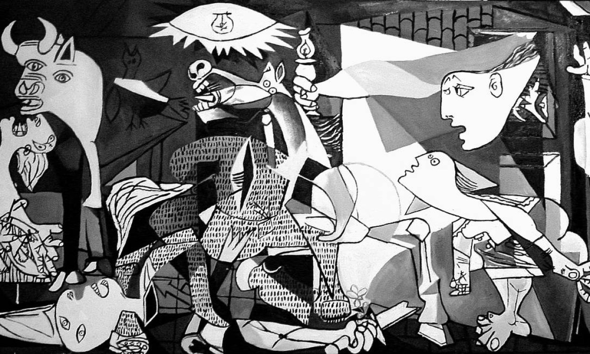
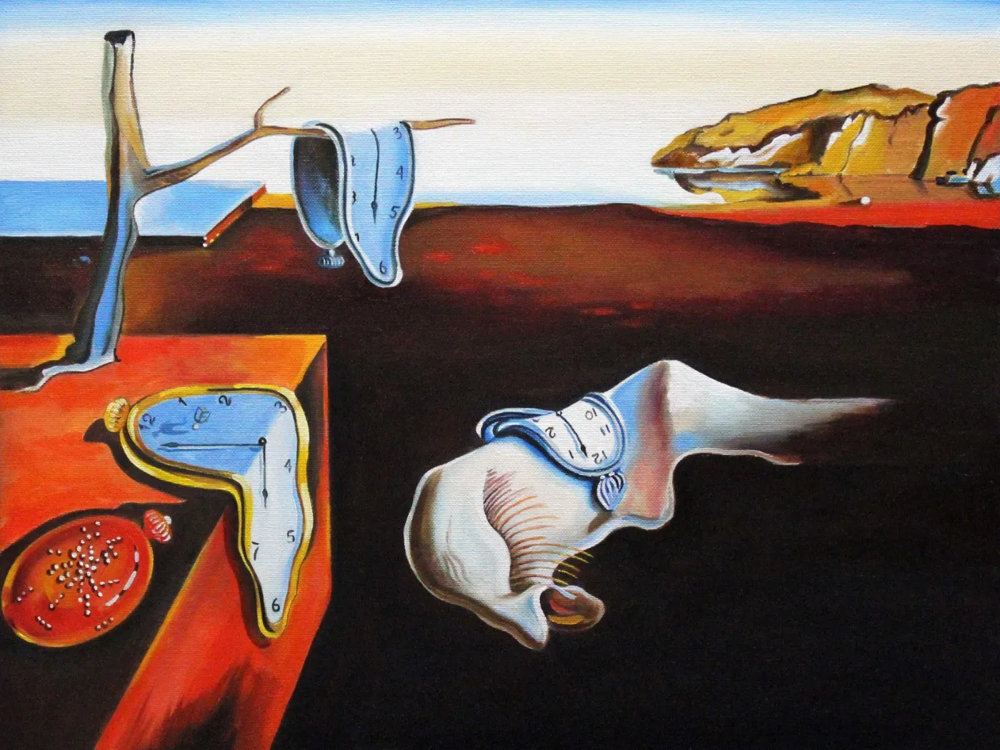
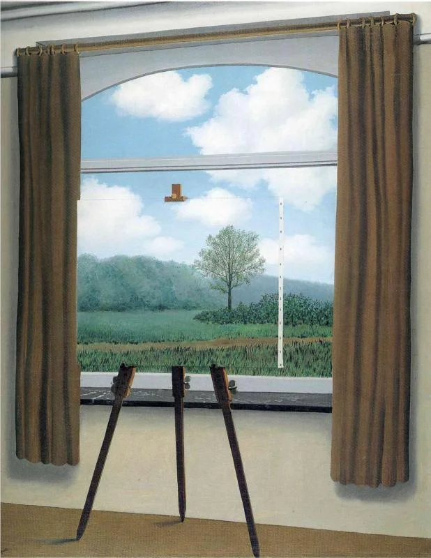
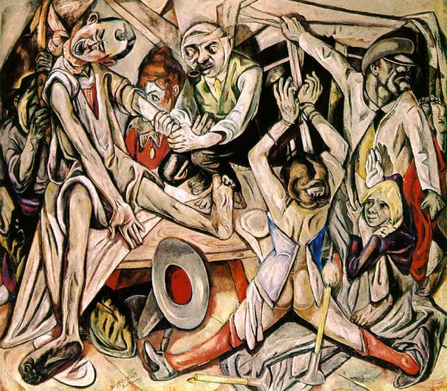
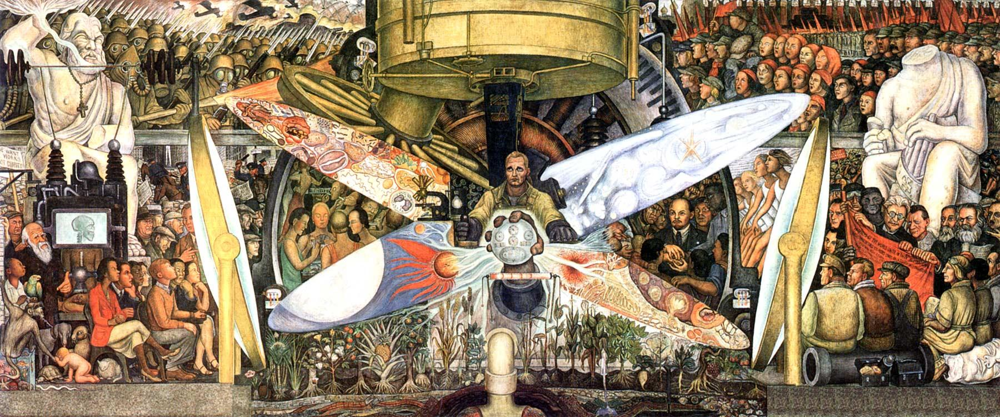
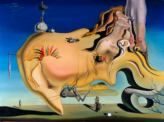

Pós Primeira Guerra:
Após a Primeira Guerra, a Europa estava devastada. O conflito havia deixado mais de dez milhões de mortos, milhões de feridos e um rastro de destruição econômica, especialmente em países como França, Bélgica e Alemanha. Para reorganizar o cenário internacional, foi assinado em 1919 o Tratado de Versalhes, que impôs punições severas à Alemanha, considerada a principal responsável pelo conflito. O país foi obrigado a pagar indenizações altíssimas, perdeu territórios e colônias e teve seu exército drasticamente reduzido. Essas medidas geraram um sentimento de humilhação e revolta entre os alemães, alimentando o desejo de revanche que, anos depois, fortaleceria o nazismo. Ainda nesse contexto, foi criada a Liga das Nações, uma organização internacional que pretendia evitar novos conflitos. No entanto, por não ter força militar e depender da cooperação entre os países, a Liga mostrou-se fraca e ineficaz, sendo incapaz de impedir crises futuras.
O que foi o Periodo Entre Guerras?
O Período Entre Guerras (1919–1939) foi o intervalo entre a Primeira e a Segunda Guerra Mundial, marcado por grandes transformações políticas, econômicas e sociais. Nesse tempo, a Europa tentava se recuperar da destruição da Primeira Guerra, mas a crise econômica (principalmente a de 1929) gerou desemprego e miséria. Esse cenário facilitou a ascensão de regimes totalitários, como o fascismo de Mussolini na Itália, o nazismo de Hitler na Alemanha e o militarismo no Japão, enquanto a União Soviética vivia a ditadura de Stálin.
O que Gerou?
O Período Entre Guerras foi marcado por uma forte crise e instabilidade que acabaram criando as condições para a eclosão da Segunda Guerra Mundial. Politicamente, o Tratado de Versalhes deixou a Alemanha humilhada, com pesadas indenizações e restrições militares, o que alimentou um desejo de revanche entre os alemães. Ao mesmo tempo, a Liga das Nações, criada para manter a paz, mostrou-se fraca e incapaz de conter agressões entre países.
No campo econômico, a Grande Depressão de 1929 agravou a situação mundial, trazendo desemprego em massa, falência de empresas e pobreza generalizada. Essa crise fez muitas pessoas perderem a confiança nas democracias e passarem a apoiar líderes autoritários que prometiam soluções rápidas.
Foi nesse contexto que regimes totalitários ganharam força: Hitler, na Alemanha, prometia recuperar o orgulho nacional e reverter as punições do Tratado de Versalhes; Mussolini, na Itália, defendia o expansionismo fascista; Stalin, na União Soviética, consolidava um comunismo autoritário; e o Japão buscava conquistar territórios na Ásia.
A combinação entre crise política, econômica e social, somada ao crescimento do nacionalismo e do militarismo, fez com que esses países adotassem políticas agressivas de expansão territorial. Como as potências mundiais não reagiram de forma eficaz, esses avanços se intensificaram e acabaram levando diretamente ao início da Segunda Guerra Mundial em 1939

CULTURA e ARTE
Após o fim da Primeira Guerra Mundial, o mundo enfrentou um cenário de desilusão e instabilidade, que influenciou profundamente a produção artística. A arte desse período foi marcada por uma busca constante de novas formas de expressão para representar a angústia, o caos e a complexidade da realidade. Movimentos como o Expressionismo destacaram-se por expressar emoções intensas e subjetivas, enquanto o Dadaísmo surgiu como uma reação de protesto contra a lógica e a razão, adotando uma postura de ruptura e crítica à sociedade tradicional. O Surrealismo, por sua vez, explorou o mundo dos sonhos e do inconsciente, trazendo imagens fantásticas e simbólicas que desafiaram as convenções. Além disso, o Cubismo continuou a influenciar artistas ao desconstruir formas e apresentar múltiplos pontos de vista, enquanto o Art Déco trouxe um estilo mais sofisticado e ornamental, especialmente em arquitetura e design.
As principais mudanças:
Entre as principais mudanças culturais desse período, destacam-se o crescimento do cinema, que passou a ser uma importante forma de comunicação e entretenimento, com produções que exploravam tanto o expressionismo quanto as novas tecnologias do som. Na literatura, os escritores passaram a abordar temas como a fragmentação da identidade, o existencialismo e o absurdo da condição humana, refletindo o clima de incerteza da época. A música também teve um papel fundamental, especialmente com a popularização do jazz, que simbolizou a modernidade e a quebra de tradições culturais. Na arquitetura, o Movimento Moderno ganhou força ao adotar linhas retas, funcionalismo e materiais inovadores como aço e vidro, exemplificados pela escola Bauhaus e pelas obras de Le Corbusier.
Principais Obras

Salvador Dalí
A Persistência da Memória(1931)

René Magritte
A Condição Humana(1933)

Max Beckmann
A Noite(1919)

Wassily Kandinsky
Composição(1923)

Diego Rivera
O Homem Controlando o Universo(1934)

Salvador Dalí
O grande Masturbador(1929)